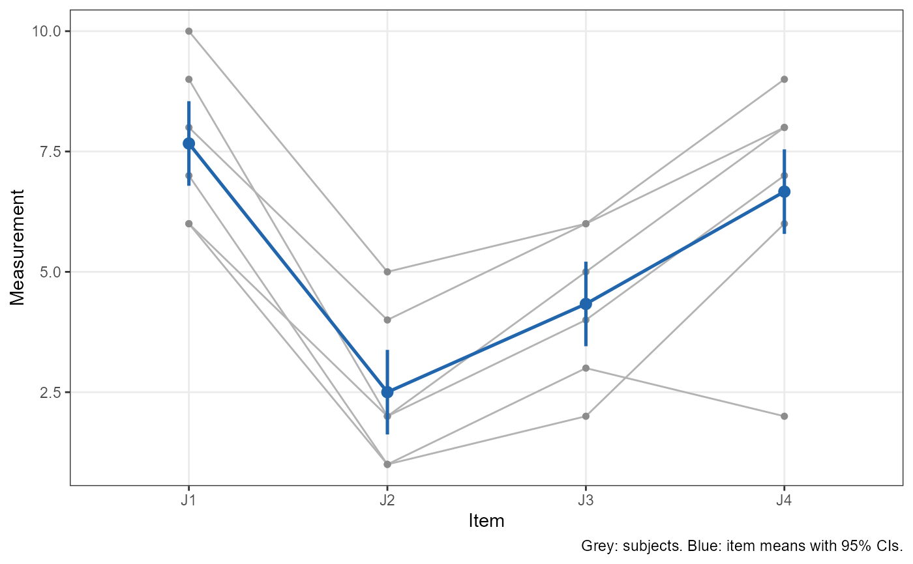
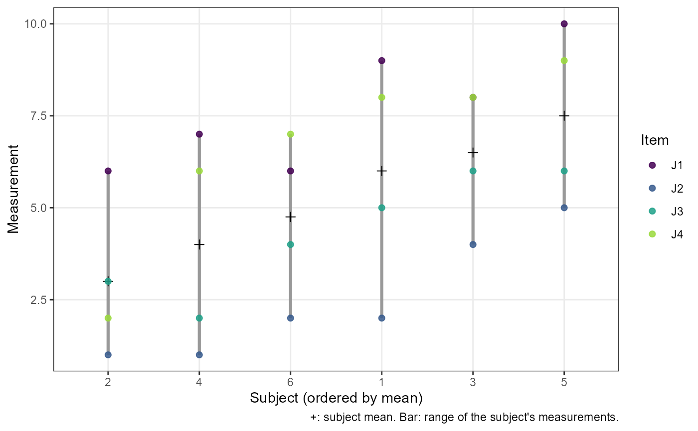
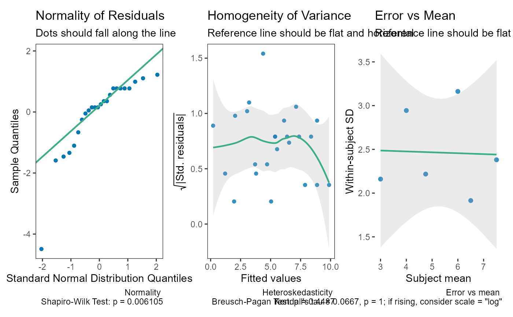

Methods for objects returned by icc_test() and reli_err_test(). They
print as standard
"htest" objects; summary() describes the result in words,
plot() shows the data, and check() gives model diagnostics.
Usage
# S3 method for class 'reli_htest'
summary(object, style = c("auto", "hypothesis", "estimation"), ...)
# S3 method for class 'summary.reli_htest'
print(x, ...)
# S3 method for class 'reli_htest'
plot(x, type = c("profile", "subjects", "items", "pairs"), ...)
# S3 method for class 'reli_htest'
check(x, ...)Arguments
- style
How
summary()words the result:"auto"(default),"hypothesis", or"estimation"."auto"uses"hypothesis"when the result has a p-value (anull.valuewas given) and"estimation"otherwise. See Details.- ...
Not used.
- x, object
An object of class
reli_htest.- type
For
plot(), the plot to draw:"profile"(default), each subject's measurements across the items in grey with the item means and their 95% confidence intervals (adjusted for subjects when measurements are missing);"subjects", the subjects ordered by their mean, with each subject's measurements, coloured by item, and their range, which compares the spread between subjects with the scatter within subjects (what the ICC summarises);"items", the deviation of each measurement from its subject's mean, by item, which shows systematic differences between items (error for an agreement ICC, but not for a consistency ICC); or"pairs", each pair of items plotted against each other with the line of identity.
Value
summaryAn object of class
summary.reli_htest: a list with the description intext, thestyleused, the S-value (s.value, when there is a p-value) and the parts used to build it. It prints as a paragraph.plotA ggplot2 plot (see
type).checkDiagnostic plots combined with patchwork: normality and heteroskedasticity of the model residuals, and the within-subject SD against the subject mean (on the scale the model was fitted). A rising within-subject SD means the error grows with the size of the measurement, so a relative error (
reli_err_test()withscale = "log") describes it better.
Details
summary() describes the estimate and its interval, what was estimated,
the design, and how the inference was done, in one of two styles:
"hypothesis"(Neyman-Pearson; as in the TOSTER package): the test decision at \(\alpha = 1 -\)conf.level, i.e. whether the null hypothesis can be rejected. Requires a p-value; without one,summary()falls back to"estimation"with a message."estimation"(following Greenland and colleagues): the interval is described as a compatibility interval, the range of values most compatible with the data under the model, with no decision and no \(\alpha\). If there is a p-value, it is converted to an S-value (surprisal), \(s = -\log_2 p\): the bits of information the data provide against the tested hypothesis, comparable to the surprise of getting s heads in a row from s tosses of a fair coin.
Qualitative labels such as "good" or "excellent" are never attached to an
ICC; see icc_test() for why.
References
Greenland, S. (2019). Valid p-values behave exactly as they should: Some misleading criticisms of p-values and their resolution with S-values. The American Statistician, 73(sup1), 106-114. doi:10.1080/00031305.2018.1529625
Rafi, Z., & Greenland, S. (2020). Semantic and cognitive tools to aid statistical science: replace confidence and significance by compatibility and surprise. BMC Medical Research Methodology, 20, 244. doi:10.1186/s12874-020-01105-9
Examples
sf <- data.frame(J1 = c(9, 6, 8, 7, 10, 6), J2 = c(2, 1, 4, 1, 5, 2),
J3 = c(5, 3, 6, 2, 6, 4), J4 = c(8, 2, 8, 6, 9, 7))
res <- icc_test(col.names = c("J1", "J2", "J3", "J4"), data = sf)
summary(res)
#> The estimated ICC(C,1) was 0.715 (95% compatibility interval [0.342,
#> 0.946]). Values in this interval are the most compatible with the data,
#> given the model and its assumptions. The estimate is the two-way,
#> consistency, single-measure ICC (McGraw & Wong ICC(C,1); Shrout &
#> Fleiss ICC(3,1)): the reliability of a single measurement, excluding
#> systematic differences between items. The data had 6 subjects and 4
#> items (24 measurements, none missing); variance components were
#> estimated by analysis of variance. The F-based interval is exact
#> (McGraw & Wong, 1996).
plot(res)

plot(res, type = "subjects")

check(res)

# A test against a threshold, in both styles
res2 <- icc_test(col.names = c("J1", "J2", "J3", "J4"), data = sf,
null.value = 0.5, alternative = "greater")
summary(res2)
#> The test is not statistically significant (F(5, 15) = 2.21, p = 0.108;
#> ICC(C,1) = 0.715, 95% lower bound 0.412) at the 0.05 alpha level. The
#> null hypothesis cannot be rejected: at the desired error rate, it
#> cannot be stated that the true ICC is greater than 0.5. The estimate is
#> the two-way, consistency, single-measure ICC (McGraw & Wong ICC(C,1);
#> Shrout & Fleiss ICC(3,1)): the reliability of a single measurement,
#> excluding systematic differences between items. The data had 6 subjects
#> and 4 items (24 measurements, none missing); variance components were
#> estimated by analysis of variance. The interval and F test are exact
#> (McGraw & Wong, 1996).
summary(res2, style = "estimation")
#> The estimated ICC(C,1) was 0.715 (95% lower compatibility bound 0.412).
#> Values above this bound are the most compatible with the data, given
#> the model and its assumptions. Against the hypothesis that the true
#> ICC(C,1) is at most 0.5, p = 0.108, an S-value of 3.21 bits of
#> information (S = -log2 p): about as surprising as getting 3 heads in a
#> row from 3 tosses of a fair coin. The estimate is the two-way,
#> consistency, single-measure ICC (McGraw & Wong ICC(C,1); Shrout &
#> Fleiss ICC(3,1)): the reliability of a single measurement, excluding
#> systematic differences between items. The data had 6 subjects and 4
#> items (24 measurements, none missing); variance components were
#> estimated by analysis of variance. The interval and F test are exact
#> (McGraw & Wong, 1996).